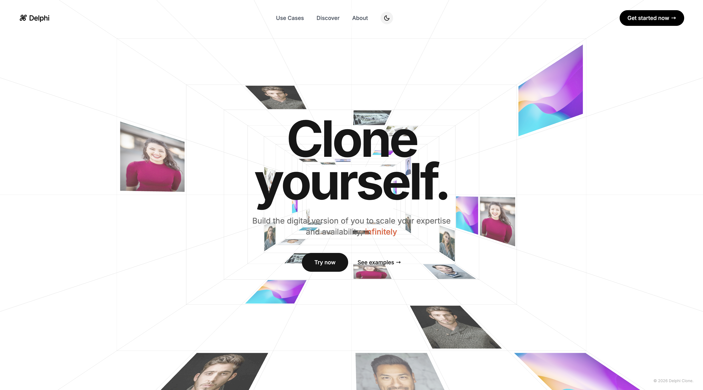
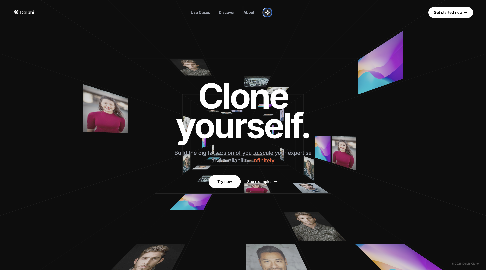

// Interactive 3D Experience
Delphi — Infinite Tunnel Effect
Delphi is a visually immersive 3D web experience featuring an infinite tunnel environment, floating visual elements, cinematic camera movement, and smooth interactions. Built with modern web technologies, the project demonstrates how interactive 3D scenes can transform traditional landing pages into engaging digital experiences.


Project Overview
Delphi explores the fusion of storytelling, animation, and 3D web graphics. The project creates a futuristic browsing experience by placing content inside an endless tunnel-like environment. Through perspective-based layouts, smooth transitions, and floating media assets, users experience a highly engaging interface that feels dynamic and alive.
Key Features
- Infinite 3D tunnel environment with depth-based visual effects.
- Smooth camera movement and immersive scene transitions.
- Interactive floating image panels positioned in 3D space.
- Modern landing page with bold typography and engaging CTAs.
- Responsive navigation and user-friendly interface.
- GPU-accelerated rendering powered by Three.js.
- High-performance animations and transitions using GSAP.
- Clean visual design focused on creativity and user engagement.
- Smooth interaction patterns optimized for desktop devices.
Technical Highlights
- Three.js based scene rendering and perspective management.
- Advanced animation sequencing with GSAP timelines.
- Optimized rendering pipeline for fluid performance.
- Modular project structure for scalable development.